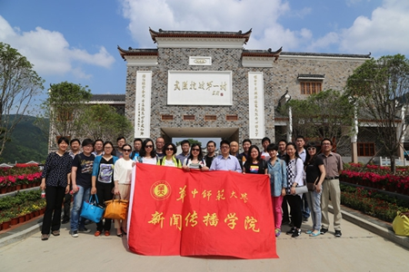

忆抗日烽火 惜当今和平 我院党支部前往黄陂姚家山新四军抗日根据地开展特色党日活动 |
 |
本院讯（ 张振宇）5月10日，新闻传播学院教工党支部全体成员与其他教工一道，前往有着“武汉抗战第一村”的黄陂姚家山新四军抗日根据地，参观学习我党我军抗战先烈的英雄事迹。 |
姚家山为黄陂北部门户，距武汉市中心90公里。它属于大别山脉系列，北接大悟山，西与孝感毗邻，历史上就是地跨鄂豫皖湘赣五省的战略要地。1940年，李先念率领新四军豫鄂挺进纵队进驻姚家山，与前期到达姚家山地区的边区党委负责人陈少敏会合，开始在姚家山开辟抗日根据地，成为抗日战争的红色堡垒。 |
据了解，现在的姚家山保留下来的代表性革命遗址有9处，包括司令部旧址、政治部、后勤部、印刷厂、医院、枪械所等，既是鄂豫湘赣皖五省的战斗指挥中心，还是造枪修炮、宣传鼓动、治病疗伤的后勤保障中心。新四军革命先烈办公用的手摇电话机、开会时用的老式桌椅、脂油灯，帮助群众生产生活的用品、农具等每一件文物背后，都是一个鲜活的革命故事，每一件文物都饱含着“民拥军、军爱民”的鱼水深情。 |
学院教工党员怀着崇敬的心情，参观了这些革命文物，并寻访了当年支援抗日的本地村民。大家深感抗战的艰辛，也倍加珍惜今日来之不易的和平生活。特别是看到当年的油印报纸，我们这些从事新闻传播教育的教工，切实感受到传播技术的巨大进步，也深感新闻传播的巨大社会作用。 |